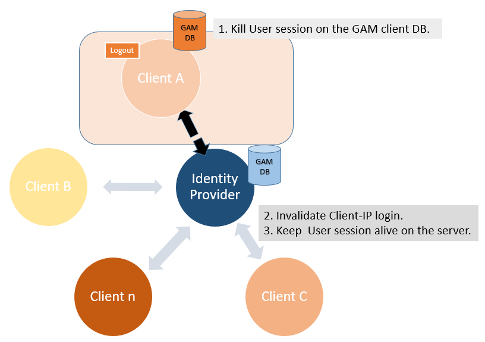
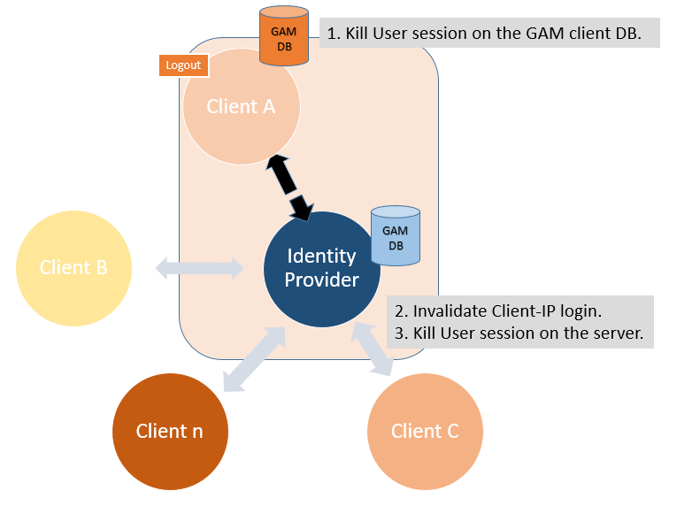
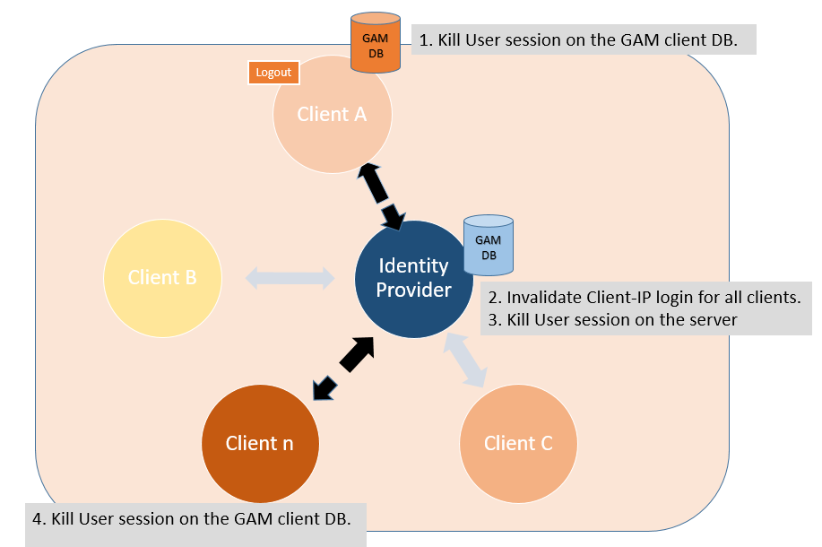
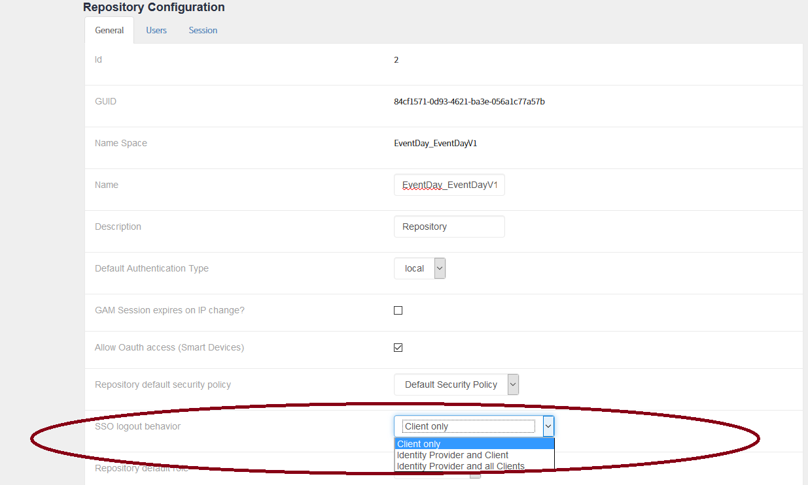

Regarding Single Sign On in applications using GAM, there are three different ways to implement a Logout. First, the following has to be taken into account:
3. Performing GAMsession.logout on the client without considering any of the options below, does not perform the server logout. (*) "client application" means an applications running in a browser/device. Examples:
Basically, the Logout can be Client-Side exclusively (so the server's user session is kept alive), Identity Provider & Client (the user session on the server IP is killed), and Identity Provider & All Clients (all the client application's sessions are killed for the user, as well as the user session on the server IP). Client-Side OnlyIn this scenario, the session associated with the pair User - Client application is killed. Killing this session removes the user's Identity Provider connection. The next time he wants to log in from this client application, the server's Identity Provider session will be used if it remains alive (if it hasn't timed out). The flow is as follows:
Finally, a redirect is done to the GAM Application logout object of the client application where the log out was executed.  Identity Provider & Client
Finally, a redirect is done to the GAM Application logout object of the client application where the log out was executed.  Identity Provider & All Clients
Finally, a redirect is done to the GAM Application logout object of the client application where the log out was executed.  Using the Identity Provider & All clients options, since GeneXus 15 Upgrade 11 if the final users logsout from the Identity Provider, the client sessions (who run in the same browser instance) are also finished. How to configure the Logout options for SSOThe option is configured using the GAM Web Backoffice under the Identity Provider's Repository Configuration (or programmatically, using the GAM API). 
|
| Backlinks | |
| GAM Application logout object | GAM Remote Authentication Type |
| Single Sign On in applications using GAM |